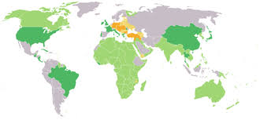

Az Antant
Az Antant (szó szerinti jelentése: egyetértés) a háború kirobbanásakor a három nagyhatalom együttműködésére épült, de a háború során számos más ország is csatlakozott hozzájuk.
Fő alapító tagok:- Franciaország – A kontinentális Európa egyik fő hadszíntere.
- Orosz Birodalom – Az keleti front fő ereje (1917-ig).
- Nagy-Britannia – A hatalmas tengeri flotta és a gyarmatbirodalom mozgósítója.
Később csatlakozott többek között: Olaszország (1915), Románia (1916) és az Amerikai Egyesült Államok (1917).